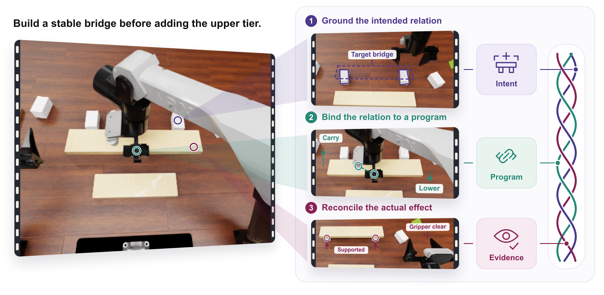
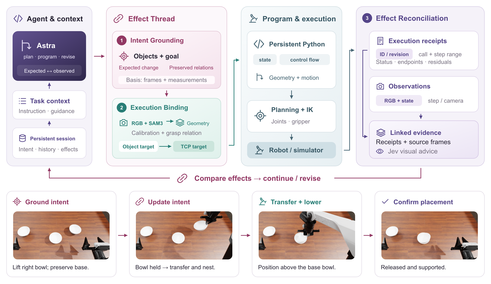

Intent Grounding
Give each physical operation explicit, persistent intent: the objects involved, current evidence, desired change, expected effect, and relations to preserve. Successive programs share the same goal and basis for decisions.

Effect-Threaded Programming
for Embodied Control
ActWeave makes physical operations a first-class abstraction for embodied programming. It weaves an operation's intent, executable programs, and effect evidence into an evolving Effect Thread, connecting what the robot should change to what actually happens.

A manipulation goal concerns relationships in the physical world: a grasp holds, a board gains support, or a bowl remains nested after release. These changes span programs, motions, and observations. Interfaces centered on individual tool calls scatter their goals and feedback, creating an Intent-Effect Gap.
An Effect Thread gives each operation a persistent identity and revision. Intent, geometric assumptions, execution receipts, and observed effects stay connected as Astra plans, acts, and revises its next decision.
Give each physical operation explicit, persistent intent: the objects involved, current evidence, desired change, expected effect, and relations to preserve. Successive programs share the same goal and basis for decisions.
Ground object and functional-point geometry in current measurements. Hand-object bindings translate object goals into robot motion targets; persistent Python composes geometry, motion, and numerical branches. Execution intervals, endpoints, and errors remain linked to their operation.
Compare geometric residuals, source images, and visual judgments with the expected effect in the same thread. Astra uses this evidence to continue, refine parameters, or change the method, revising the operation as the physical situation evolves.
On a fixed 168-case evaluation spanning all 42 RoboDojo tasks and five capability dimensions, ActWeave achieves 47.71% SR and 55.49 Score, improving over Baseline by 6.67 percentage points and 8.08 points, respectively.
Both methods use the same four fixed seed-0 cases per task, including two standard and two randomized cases for Generalization. We will report results on the full 2,100-case evaluation, covering 50 cases per task, in a future update.